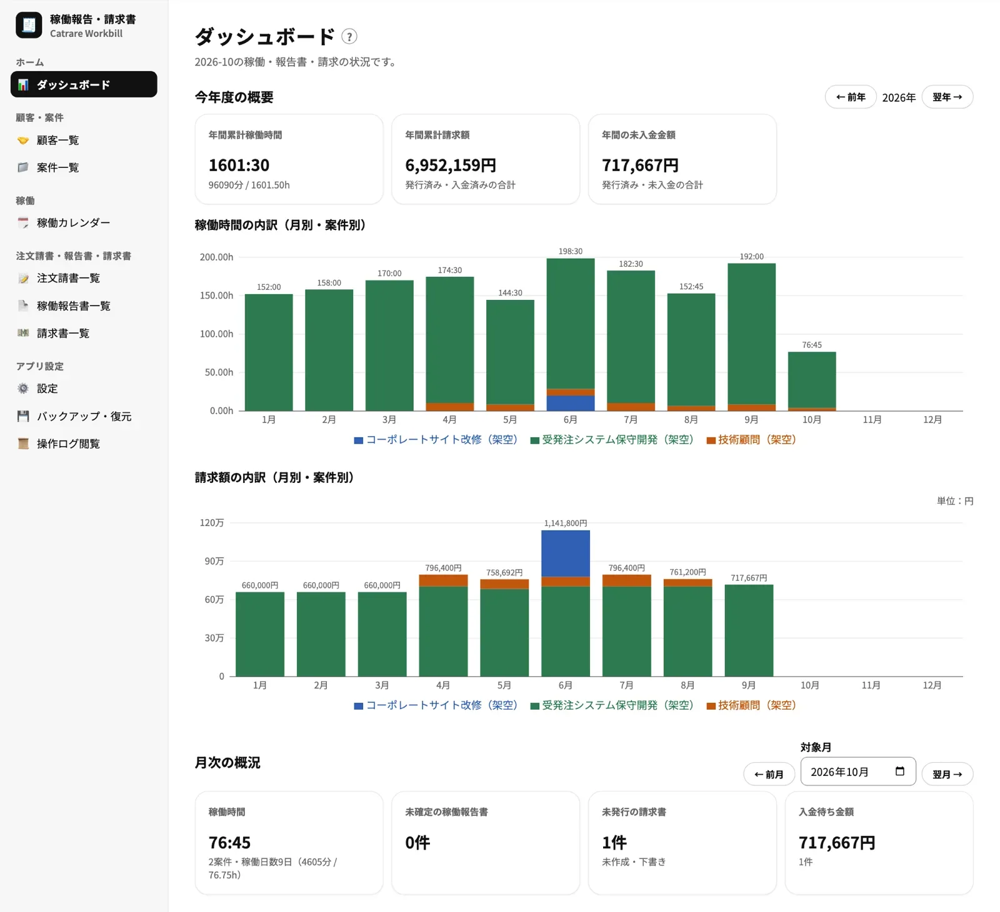
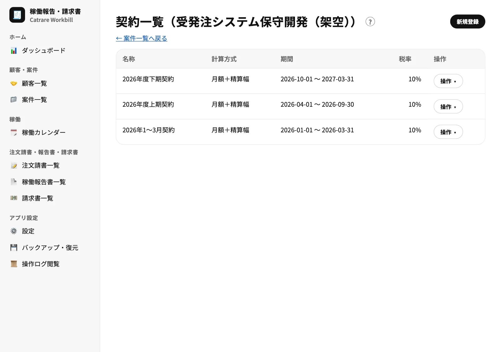
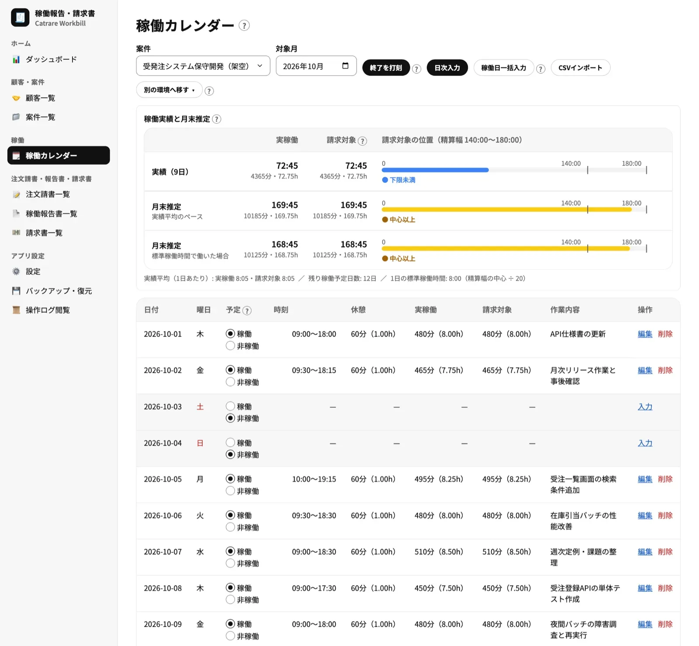
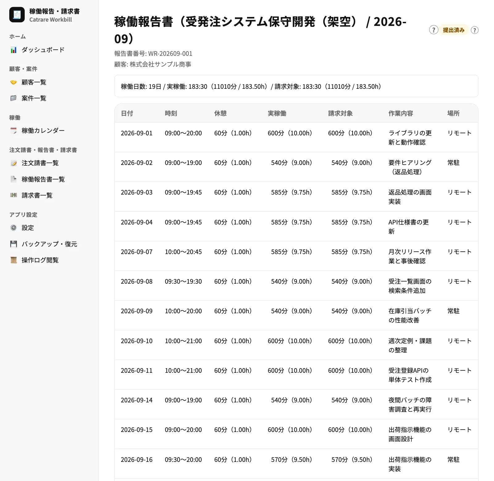
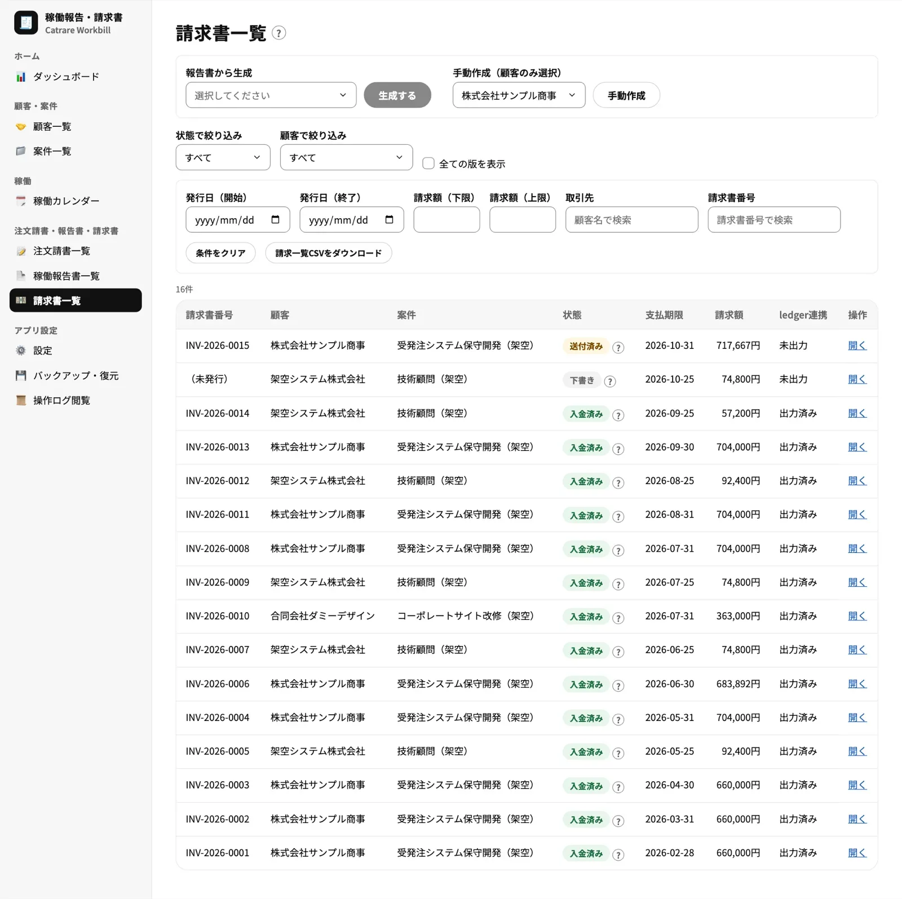
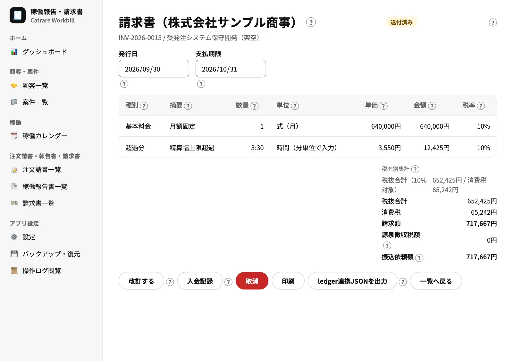
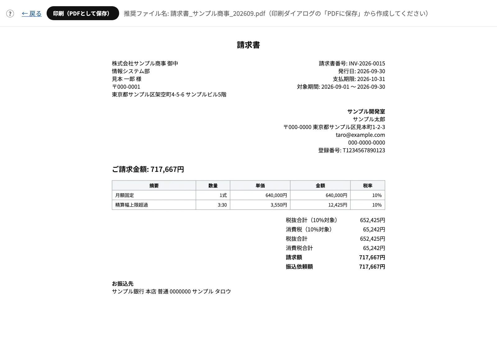
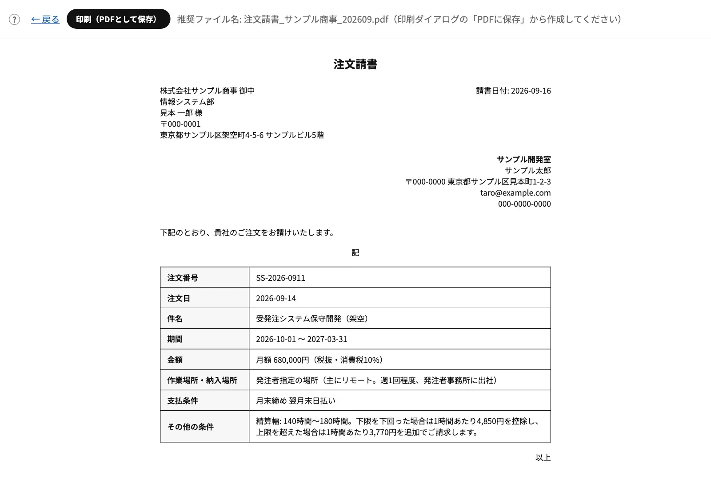
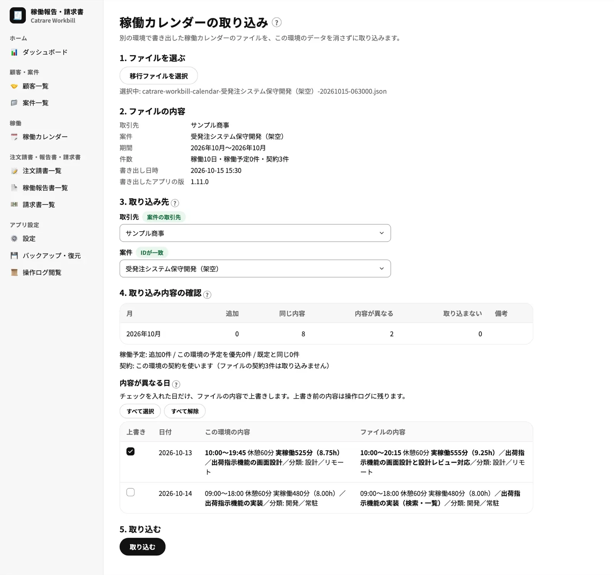

Web App
WORKBILL稼働報告・請求書
フリーランス・個人事業主のための、稼働報告書と請求書を無料で作れるブラウザアプリです。日々の稼働時間を入力すると、契約条件に沿って報酬を自動計算し、月次の稼働報告書と請求書を作成・発行できます。データはお使いのブラウザ内だけに保存され、サーバーには送信されません。
- 無料
- インストール不要
- データは端末内のみ
- LEDGERと連携

Features
稼働の入力から請求書の発行まで
顧客・案件・契約の管理
契約ごとに請求方式（月額固定・月額＋精算幅・時間単価・日額・固定金額）、丸め規則、税率、有効期間を設定し、顧客ごとに締め日と支払条件を設定します。条件が変わったときは期間ごとに契約を追加して履歴を残せます。
注文請書
取引先から受け取った注文書に対して、注文請書を作成・発行できます。件名・期間・金額・支払条件は契約から初期値が入り、注文書の内容を入力して発行します。印刷用の表示からPDFに保存できます。
稼働カレンダー・日次入力
日々の稼働時間・休憩・作業内容を分単位で入力できます。開始・終了の打刻、前回の作業内容の初期表示、稼働予定に合わせた一括入力（祝日マスター対応）、CSVインポートにも対応します。
稼働実績と月末推定
月の実績と、月末の稼働時間の推定（これまでのペースの場合・標準稼働時間で働いた場合）を1つの表にまとめ、精算幅や目安の時間に対する位置をグラフで表示します。
稼働報告書
月次の報告書を作成し、下書き・確定・提出・承認の状態で管理します。確定すると内容は凍結され、修正は差戻しで行います。印刷用の表示からPDFに保存できます。
報酬計算・請求書の作成
契約条件と稼働から請求明細を自動で生成します。消費税は税率ごとに1回の端数処理。手動の明細追加、請求書番号の採番、支払期限の算出にも対応します。
発行・改訂・入金管理
発行すると番号が確定し、編集できなくなります。修正は改訂（Rev.n）で行い、送付・入金の記録や期日超過の強調表示、取消にも対応します。
請求書の検索・印刷
発行日・請求額の範囲・取引先・請求書番号で検索できます（電子帳簿保存法を意識した設計）。登録番号や税率別の集計を記載した書式で印刷確認し、PDFに保存できます。PDFの既定のファイル名は「種別_取引先名_対象月」です。
ダッシュボード
年間の稼働時間・請求額の推移を、案件別の内訳つきで表示します。未確定の報告書・未発行の請求書・入金待ち・期日超過を一目で確認できます。
稼働カレンダーを別の環境へ移す
案件ごとの稼働カレンダーをファイルに書き出し、別のパソコンやブラウザの WORKBILL へ取り込めます。バックアップの復元と違い、取り込み先のデータを消さずに追加します。
LEDGER連携・バックアップ
確定した請求データをJSONで出力し、LEDGERへ取り込めます。JSONバックアップからの復元にも対応し、バックアップ・自動バックアップ・書き出しの保存先フォルダを用途ごとに設定できます。
画面ガイド・用語集
画面ごとの説明（タイトル横の「?」で表示）、入力欄のヒント、用語集を用意しています。
Screens
請求書・稼働報告書の実際の画面
掲載している画面は、架空の個人事業主「サンプル太郎」のダミーデータです（取引先名・金額はすべて架空のものです）。
顧客・案件・契約を管理
案件ごとに、期間別の契約を版管理します。たとえば「1〜5月は月額固定、6月から日額」のように条件が変わっても、対象月の契約が自動で計算に使われます。
- 請求方式：月額固定・月額＋精算幅・時間単価・日額・固定金額
- 丸め規則・税率・有効期間は契約ごとに、締め日・支払条件は顧客ごとに設定

稼働カレンダーで日々の稼働を入力
案件と月を選び、日々の稼働時間と作業内容を入力します。上部の表には、月の実績と2通りの月末推定（これまでのペースの場合・標準稼働時間で働いた場合）が並び、精算幅や目安の時間に対する位置をグラフで確認できます。
- 「開始を打刻」「終了を打刻」で、その場の時刻を記録
- 休日は既定で非稼働（祝日マスター対応）。稼働日一括入力・CSVインポートに対応
- 案件ごとに書き出して、別の環境へ移せます

月次の稼働報告書を作成
1か月の稼働をまとめて顧客に提出する報告書です。確定すると対象月の稼働入力がロックされ、内容が凍結されます。修正は差戻しで行い、経緯が分かる状態を保ちます。
- 状態：下書き → 確定 → 提出 → 承認
- 印刷用の表示からPDFに保存

請求書を状態別に管理
請求書を状態・顧客・発行日・請求額・取引先で絞り込めます。支払期限を過ぎた請求書は赤く強調され、LEDGERへの連携状況も一覧で確認できます。
- 報告書から生成、または顧客を選んで手動作成
- 改訂した請求書は版（Rev.n）で絞り込み

契約と稼働から請求書を自動計算
契約条件と確定した稼働から、請求明細を自動で作ります。精算幅の上限超過分の加算や、税率ごとの消費税の集計も自動です。発行すると番号が確定し、修正は改訂で行います。
- 消費税は税率ごとに1回の端数処理
- 源泉徴収税額は自動判定せず、手入力で対応

印刷確認してPDFに保存
登録番号・振込先・税率別の集計を記載した書式で、請求書を印刷確認できます。ブラウザの印刷機能から「PDFとして保存」を選ぶと、ファイルとして保存できます。
- PDFの既定のファイル名は「種別_取引先名_対象月」

注文書に対して注文請書を発行
契約から注文請書を作り、取引先から受け取った注文書の内容を入力して発行します。件名・期間・金額・支払条件は契約・案件・取引先から初期値が入ります。発行すると宛先と内容が確定し、訂正は取消して作り直します。
- 契約1件につき1通。契約一覧の「操作」から作成
- 印刷用の表示からPDFに保存

稼働カレンダーを別の環境へ移す
案件ごとの稼働カレンダーをファイルに書き出し、別のパソコンやブラウザの WORKBILL へ取り込めます。取り込み先のデータは消さずに追加し、内容が異なる日は比べてから上書きするかを選べます。
- 取引先・案件は、IDや名前で自動で対応付け
- 上書き前の内容は操作ログに残ります

Tech Stack
ブラウザだけで完結する構成
| 実行方式 | ブラウザで動く静的Webアプリ（サーバー処理なし）。GitHub Pages で配布 |
|---|---|
| フロントエンド | TypeScript ／ React 19 ／ Vite ／ React Router（HashRouter） |
| UI | Tailwind CSS v4 ／ shadcn/ui（Base UI）を土台にした共通UIパッケージ ／ Noto Sans JP（自己ホスト）／ Recharts（グラフ） |
| データ保存 | IndexedDB（Dexie.js）。すべてブラウザ内に保存し、サーバーへは送信しません |
| 状態管理・検証 | Zustand ／ Zod（入力・バックアップの検証） |
| 日付・CSV | date-fns ／ PapaParse |
| テスト・品質 | Vitest（単体テスト）／ Playwright（E2E）／ Biome（Lint・Format） |
| 開発体制 | pnpm モノレポで WORKBILL・LEDGER と UI 部品を共有し、設計書を正としてテスト駆動で段階的に開発しています。 |
ローカルファースト
稼働・請求のデータはお使いのブラウザのIndexedDBにだけ保存し、ネットワークへは送信しません。JSONバックアップで別の端末へ移せます。
計算ルールを純関数に集約
時間は分単位の整数で扱い、丸め・報酬計算・消費税の端数処理は入出力を持たない純関数にまとめ、同じ入力から必ず同じ結果になるようテストで固定しています。
確定したものは凍結
確定済みの報告書・発行済みの請求書はスナップショットとして凍結します。直接編集はできず、差戻し・改訂という手順だけで変更します。
LEDGERとの疎結合
帳簿は別アプリのLEDGERが担い、確定した請求データをJSONファイルで受け渡します。売上取引・売掛金・入金の正本はLEDGERです。
Notes
ご利用にあたって
本アプリは稼働報告・請求書作成を補助するツールです。消費税・源泉徴収などの税務上の扱いは、ご自身の契約や状況に合わせてご確認ください（源泉徴収は自動判定しません）。
データはお使いのブラウザにだけ保存されます。ブラウザのデータ削除や端末の変更で失われることがあるため、バックアップ・復元画面から定期的にバックアップを保存してください。
PCのブラウザでの利用を想定しています。
FAQ
よくある質問
本当に無料で使えますか？
はい、無料です。登録・ログインも不要で、ブラウザで開くとすぐに使えます。
入力したデータはどこに保存されますか？
お使いのブラウザ内（IndexedDB）にだけ保存し、サーバーには送信しません。ブラウザのデータを削除すると失われるため、バックアップ・復元画面から定期的にバックアップを保存してください。
インボイス制度（適格請求書）に対応していますか？
設定画面で適格請求書発行事業者の登録番号を入力すると、請求書に記載されます。消費税は税率ごとに合計してから1回だけ端数処理し、税率別の内訳も記載します。適格請求書の要件を満たすかどうかは、ご自身の状況に合わせてご確認ください。
SES・準委任の精算幅（140〜180時間など）の計算はできますか？
「月額＋精算幅」の契約では、稼働時間が上限を超えた分の加算と、下限に満たない分の控除を自動で計算します。15分単位などの時間の丸めも、契約ごとに設定できます。
源泉徴収税額は計算できますか？
源泉徴収税額は請求書ごとに入力します。「10.21%」ボタンで税抜合計からの概算を入力できますが、源泉徴収の対象かどうかは自動で判定しません。契約書や顧客にご確認ください。
請求書や稼働報告書をPDFで保存できますか？
印刷用の表示を開き、ブラウザの印刷機能で「PDFとして保存」を選ぶと、PDFファイルとして保存できます。
別のパソコンでも使えますか？
バックアップ・復元画面でバックアップファイルを保存し、移したいパソコンのブラウザで復元すると、同じデータを使えます。
スマートフォンでも使えますか？
PCのブラウザでのご利用を想定しています。
帳簿づけはできますか？
帳簿は姉妹アプリのLEDGER（帳簿システム・無料）で行います。WORKBILLで確定した請求データを、LEDGERへ取り込めます。
WORKBILL を使ってみる
登録・ログインは不要です。ブラウザで開くとすぐに使えます。初めて開いたときは空の状態です。
PCのブラウザでのご利用を想定しています。